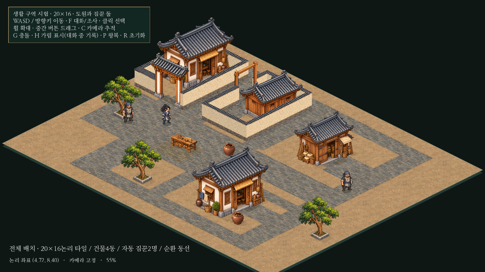

20×16 생활 구역 · 탐험과 카메라
별도 씬에서 건물4동, 기존 NPC2명, 큰길과 골목, 열린 작업 공간과 담장 주거를 연결했습니다. 기존12×12씬과 본게임은 유지했습니다. 모든 그림을 재사용하며 도원/짐꾼의96높이와 속도4.8은 동일합니다.
전체 배치도

전체를 보기 위한 촬영용55% · 1600×900. 실제 플레이 화면은 아래의 기본85%입니다.
왼쪽 기존 담장 구역, 오른쪽 열린 물자 창고, 아래쪽 담장 없는 민가와 뒤 골목, 공용 마당의 목공 작업대를 순환 동선으로 연결했습니다. 실제 충돌/문 앞 접근 경로 보기 · 비교용 기존12×12 전체(75%)
실제 입력으로 한 바퀴 탐험
약10초. 초반 구역별 확인과 마지막 대화는 시험 위치를 바꿔 촬영했습니다. 가운데 순환 구간은 위치/카메라 컷 없이 실제 키보드 입력으로 출발점까지 돌아갑니다. 약37.16타일,60Hz 검사에서 입력 이동 약7.73초입니다. 영상 다운로드 · 실제 출발점 귀환 화면
실제 플레이 카메라의 주요 지점
모두1280×720·기본85%·같은 인물 크기입니다. 뒤 골목에서는 건물에 가려지므로 기존 위치 표식이 따라옵니다.
검증 결과와 남은 사항
기존8검사와 확장1검사 모두 PASS. 네 맵 경계의 실제 충돌, 옛12경계 밖의 이동/양보/대화, 카메라 확대·수동 이동·추적 전환과 작은 맵의 가운데 고정을 확인했습니다. 마름모 외곽은 아직 단색 시험 배경이며 실내/지붕 투명화·대규모 NPC 성능은 이번 범위가 아닙니다.
상세 검증·한계·재현 방법
실행 경로
| 비교용12×12 | res://prototypes/isometric/main.tscn |
|---|
| 새20×16 | res://prototypes/isometric/district.tscn |
|---|
기존 Godot 프로젝트에서 원하는 씬을 열고 F6. F5는 본게임입니다. WASD/방향키 이동, F 대화, H 가림/대화 기록, G 충돌, C 추적 전환, 휠 확대/중간 버튼 이동, P NPC 왕복 정지/재개, R 초기화.